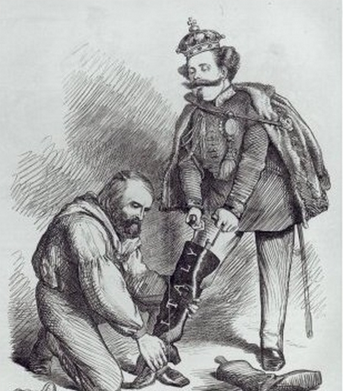

פסל ויטוריו אמנואלה
את היום הראשון לטיול המאורגן שלנו נסיים מגריבלדי- האדם שאיחד את איטליה הדרומית אל האדם ששלט באיטליה המאוחדת- המלך ויטוריו אמנואלה. בפסל של ויטוריו אמנואלה בכיכר "פיאצ'ה ג'ובאני בוביו" נשהה שעתיים שבהם נסתכל על הפסל שבו מפוסל של ויטוריו אמנואלה רוכב על סוס ונדבר על סיפור חייו ועל תרומתו של ויטוריו אמנואלה לאיחוד איטליה. בין היתר נדבר על ויטוריו אמנואלה כאדם הראשון שנקרא "מלך איטליה" כאשר גריבלדי העביר לבעלותו את איטליה הדרומית ונלמד על תפקודו ואופן התנהלותו כמלך. לאחר מכן נלך למלון למנוחה ונמשיך את הסיור שלנו בעיר קאפררה ביום למחרת.
